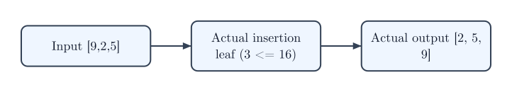
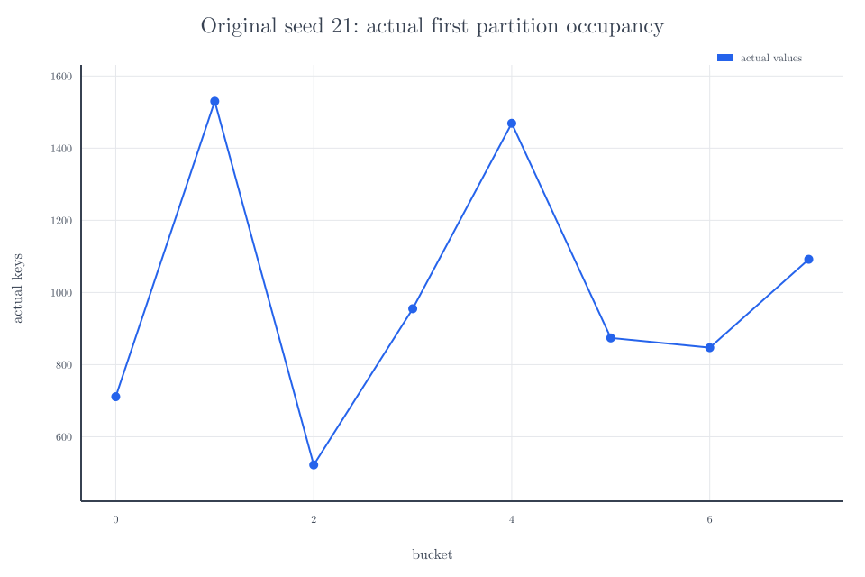
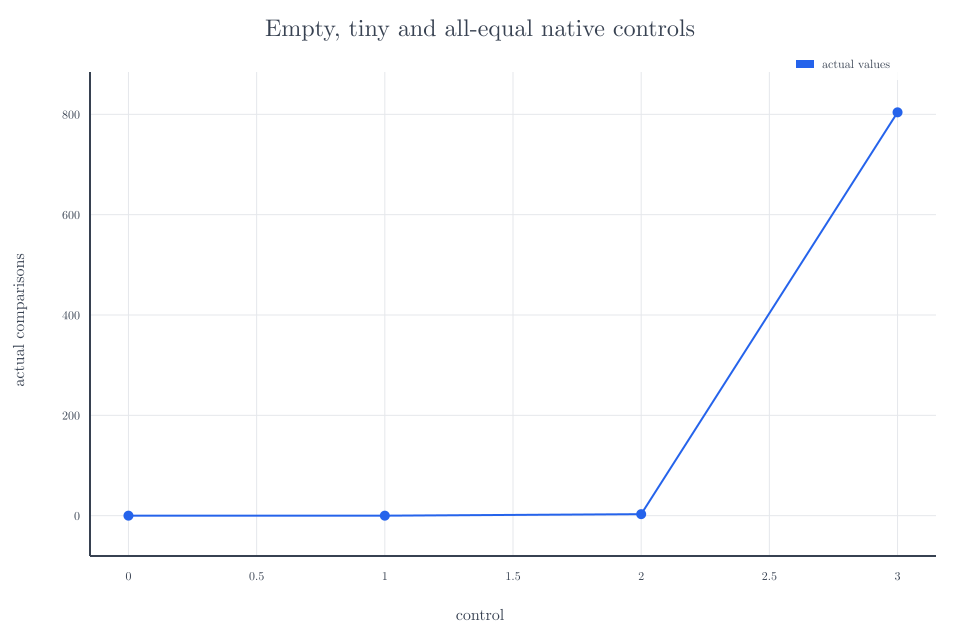
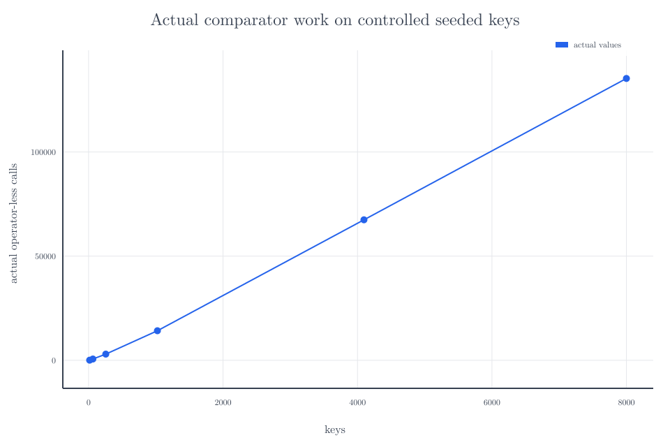

Samplesort: actual sampled splitters, buckets and fallback work
Abstract
Sort comparable keys by partitioning around several sampled splitters. Native events expose the actual sample, eight bucket sizes and recursive work; the original fifteen-key and seeded 8000-key experiments are retained.
Mechanism and mathematical scope
For a range longer than sixteen, take 24 deterministic evenly spaced samples, sort them and choose seven splitters at indices 3,6,...,21. Upper-bound classification places ties above the splitter. Concatenate eight buckets and recursively sort them. Every key belongs to exactly one bucket, and every key in an earlier bucket is no larger than any key in a later bucket; recursive sortedness therefore implies global sortedness. A whole-range bucket falls back to counted standard sorting to avoid infinite recursion. A depth fallback bounds the stack. Distribution quality affects work; deterministic sampling provides no random-input balance guarantee. The small original fifteen-key example uses insertion sort only.
A tiny actual producing history
The table and native concept diagram read the same producing execution. Every block below is a complete editable C++ program.
#include <dm/dm.hpp>
int main() {
namespace a = dm::algorithms;
namespace g = dm::graphics;
std::filesystem::create_directories("build");
auto r = a::samplesort_trace(std::vector<int>{9, 2, 5});
std::print("Actual before `{}`, after `{}`, comparisons {}.\n",
r.steps[0].before, r.steps[0].after, r.comparisons);
g::Diagram concept_diagram(48, 1100);
concept_diagram.node("n0", {0, 0}, "Input [9,2,5]");
concept_diagram.node("n1", {5, 0}, "Actual insertion leaf (3 <= 16)");
concept_diagram.node("n2", {10, 0},
std::format("Actual output {}", r.values));
concept_diagram.edge("n0", "n1").edge("n1", "n2");
concept_diagram.save_svg("build/samplesort_tiny.svg");
}Actual before [9, 2, 5], after [2, 5, 9], comparisons 3.

The retained original experiment
#include <dm/dm.hpp>
int main() {
namespace a = dm::algorithms;
namespace g = dm::graphics;
std::filesystem::create_directories("build");
auto small =
a::samplesort_run(std::vector<int>{37, 12, 88, 4, 61, 25, 9, 73, 50, 18,
96, 42, 5, 67, 30});
auto r = a::samplesort_trace(a::samplesort_example_values());
std::print("Original fifteen keys sorted `{}`; actual partitions {}.\n\nOriginal 8000 keys: sorted {}, " "comparisons {}, partitions {}.\n\n| actual first partition bucket | actual keys |\n| ---: | " "---: |\n",
small.values, small.partitions,
std::is_sorted(r.values.begin(), r.values.end()), r.comparisons,
r.partitions);
std::vector<double> x, y;
const auto &root = r.steps[0];
for (std::size_t i = 0; i < root.bucket_sizes.size(); ++i) {
std::print("| {} | {} |\n", i, root.bucket_sizes[i]);
x.push_back(i);
y.push_back(root.bucket_sizes[i]);
}
std::print("\nActual first sample source addresses `{}`; actual sorted sample `{}`; splitters `{}`.\n",
root.sample_indices, root.sample, root.splitters);
auto plot = g::RPlot::create();
plot.lines(x, y, "actual values", {37, 99, 235}).points(x, y, {37, 99, 235},
5).title(
"Original seed 21: actual first partition occupancy").x_label("bucket").y_label("actual keys");
plot.save_svg("build/samplesort_original.svg");
}Original fifteen keys sorted [4, 5, 9, 12, 18, 25, 30, 37, 42, 50, 61, 67, 73, 88, 96]; actual partitions 0.
Original 8000 keys: sorted true, comparisons 135292, partitions 244.
| actual first partition bucket | actual keys |
|---|---|
| 0 | 711 |
| 1 | 1530 |
| 2 | 522 |
| 3 | 955 |
| 4 | 1469 |
| 5 | 874 |
| 6 | 847 |
| 7 | 1092 |
Actual first sample source addresses [320, 640, 960, 1280, 1600, 1920, 2240, 2560, 2880, 3200, 3520, 3840, 4160, 4480, 4800, 5120, 5440, 5760, 6080, 6400, 6720, 7040, 7360, 7680]; actual sorted sample [14587, 24187, 82696, 89852, 188979, 205345, 283097, 315964, 337039, 348520, 379442, 402996, 473491, 513046, 603823, 656024, 722527, 735221, 764270, 776966, 813123, 864283, 924733, 973614]; splitters [89852, 283097, 348520, 473491, 656024, 764270, 864283].

Explicit controls
#include <dm/dm.hpp>
int main() {
namespace a = dm::algorithms;
namespace g = dm::graphics;
std::filesystem::create_directories("build");
std::vector<double> x, y;
std::print("| control | keys | actual partitions | actual fallbacks | sorted |\n| ---: | ---: | ---: | " "---: | --- |\n");
std::vector<std::vector<int>> v{{}, {1}, {3, 2, 1}, std::vector<int>(100, 7)};
for (std::size_t i = 0; i < v.size(); ++i) {
auto r = a::samplesort_trace(v[i]);
std::print("| {} | {} | {} | {} | {} |\n", i, r.values.size(),
r.partitions, r.fallbacks,
std::is_sorted(r.values.begin(), r.values.end()));
x.push_back(i);
y.push_back(r.comparisons);
}
bool bad = false;
try {
a::samplesort_run(std::vector<double>{1,
std::numeric_limits<double>::quiet_NaN()});
} catch (const std::invalid_argument &) {
bad = true;
}
std::print("Nonfinite key rejected {}.\n", bad);
if (!bad)
return 1;
auto plot = g::RPlot::create();
plot.lines(x, y, "actual values", {37, 99, 235}).points(x, y, {37, 99, 235},
5).title(
"Empty, tiny and all-equal native controls").x_label("control").y_label(
"actual comparisons");
plot.save_svg("build/samplesort_controls.svg");
}| control | keys | actual partitions | actual fallbacks | sorted |
|---|---|---|---|---|
| 0 | 0 | 0 | 0 | true |
| 1 | 1 | 0 | 0 | true |
| 2 | 3 | 0 | 0 | true |
| 3 | 100 | 1 | 1 | true |
Nonfinite key rejected true.

Actual selected work and sensitivity
#include <dm/dm.hpp>
int main() {
namespace a = dm::algorithms;
namespace g = dm::graphics;
std::filesystem::create_directories("build");
std::vector<double> x, y;
std::print("| keys | actual total comparisons | sample | classify | leaves | depth |\n| ---: | ---: | " "---: | ---: | ---: | ---: |\n");
for (std::size_t n : {16, 64, 256, 1024, 4096, 8000}) {
auto r = a::samplesort_run(a::samplesort_example_values(n));
std::print("| {} | {} | {} | {} | {} | {} |\n", n, r.comparisons,
r.sample_comparisons, r.splitter_comparisons,
r.leaf_comparisons, r.maximum_depth);
x.push_back(n);
y.push_back(r.comparisons);
}
auto plot = g::RPlot::create();
plot.lines(x, y, "actual values", {37, 99, 235}).points(x, y, {37, 99, 235},
5).title(
"Actual comparator work on controlled seeded keys").x_label("keys").y_label("actual operator-less calls");
plot.save_svg("build/samplesort_work.svg");
}| keys | actual total comparisons | sample | classify | leaves | depth |
|---|---|---|---|---|---|
| 16 | 65 | 0 | 0 | 65 | 0 |
| 64 | 616 | 249 | 252 | 115 | 2 |
| 256 | 2971 | 1038 | 1515 | 418 | 2 |
| 1024 | 14190 | 3962 | 8166 | 2062 | 4 |
| 4096 | 67441 | 17665 | 42135 | 7641 | 5 |
| 8000 | 135292 | 31852 | 87336 | 16104 | 5 |

API and interpretation
Trace partition after-states precede child sorting and are retained in preorder. All comparisons in sample, classification and leaf work are counted. Standard-library sort counts can differ between implementations. The legacy in-place adapter offers the underlying key operations basic exception guarantee; run and trace own their working copies.
Reusable producers, fixtures and histories live in the canonical C++ library. Captured records own their values and do not come from a separate report replay. Selected counters and record/scalar policies are specified at their API boundaries; they are not peak-byte or wall-time budgets. Synthetic structural inputs are controlled fixtures for these mechanisms.
References
Verification: all four complete programs executed; all four figures were
rendered and visually reviewed. HTML and Markdown exports preserve every
computed table and image. This ten-topic batch passes 89 scoped native cases, 21
directly instrumented ASan/UBSan cases, 95 executable public examples, 469/469
scoped documentation definitions, ten representative editor hovers and 3677
independent oracle records with 28988 checks. Frozen compatibility checks record
the intentional final-posterior RVM change. Receipts:
build/mepml-conversion/batch-334-343/.